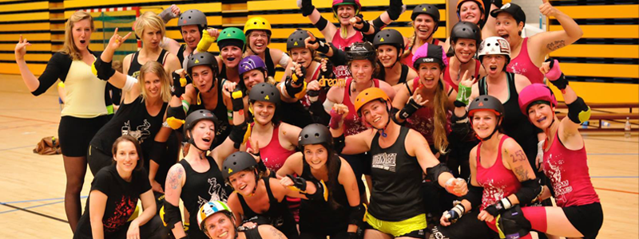

Flat Track Roller Derby is a fast-paced contact teamsport played on roller skates.
It requires speed, strategy, and athleticism. The current version of the sport evolved in 2001
in the USA and has quickly grown to more than 2000 leagues, across 53 countries.
Rotterdam Roller Derby started in 2010, then called ‘Rotterdam Death Row Honeys’.
It all started when eight women started training on roller skates in a local parking lot.
This small group has rapidly grown into one of the largest roller derby leagues in the Netherlands.
With growth come changes and in 2014 we rebranded to Rotterdam Roller Derby, to encompass the
two women’s teams, one men’s team and a steady crew of officials we had at that point. Rotterdam Death
Row Honeys became the name of the “allstars” team within the league.
Our official motto “Sterker door Strijd” and unofficial “Sterker door Snacks”
signify this as well."

Rotterdam Roller Derby is run by the members of the league. We have a Rotterdam
mentality;
roll up your sleeves, buckle down and do not complain. That mentality has brought us to where we are now.
A league with attention for everyone!
What does that mean? Anyone who has a warm heart for roller derby is welcome to our league.
We support athletes as well as recreational players. We facilitate the development of officials.
Our vision is to be open to all experiences and needs of our members. Therefore, we believe, above all,
in the importance of having fun together. Our official motto “Sterker door Strijd” and
unofficial “Sterker door Snacks” signify this as well.